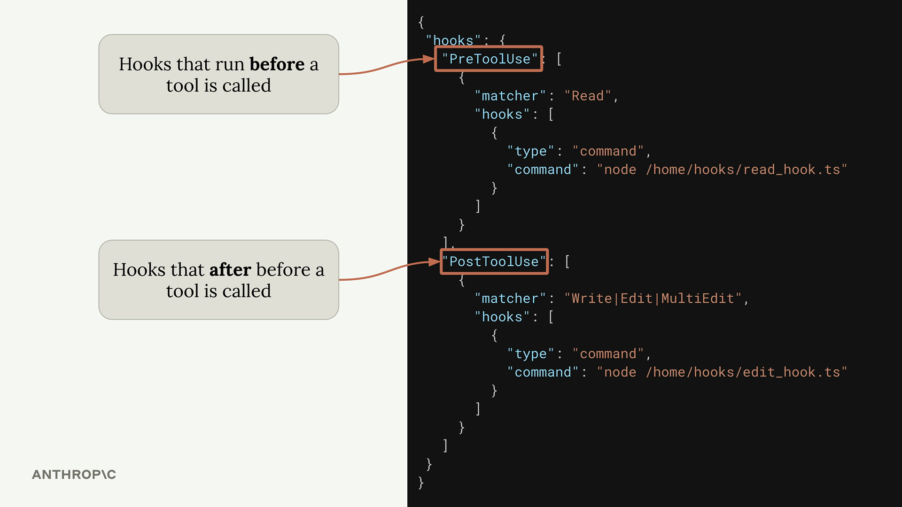
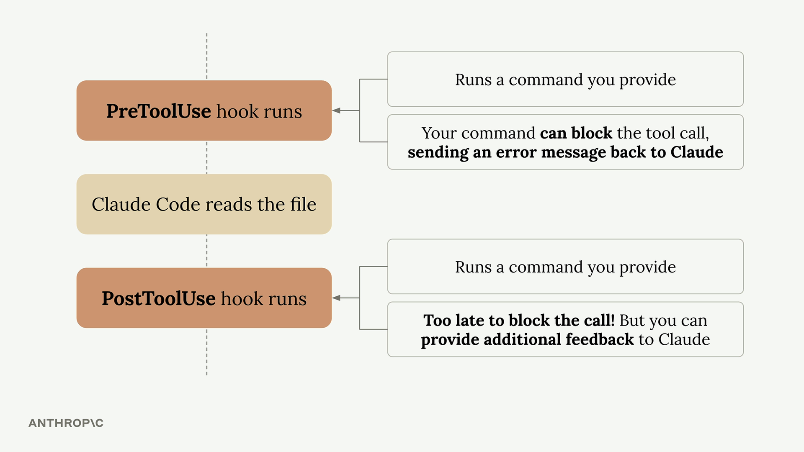

Claude Code in Action
Claude Code เชิงลึกแบบ hands-on — ตั้งแต่ setup, custom commands, การต่อ MCP servers, GitHub integration ไปจนถึง Hooks ครบทุก event และ Claude Agent SDK
คอร์สนี้ลงมือทำจริงกับแอปตัวอย่าง (uigen) แล้วค่อย ๆ เพิ่มความสามารถให้ Claude Code ทีละชั้น — เรียบเรียงตามลำดับบทเรียนจริงด้านล่าง. หมายเหตุ: วิดีโอของคอร์สนี้เล่นผ่าน player ของแพลตฟอร์ม จึงลิงก์ไปหน้าบทเรียนจริงแทน
🤖 Claude Code คืออะไร (ทบทวน)
Coding assistant คือเครื่องมือที่ใช้ language model จัดการงานเขียนโค้ดที่ซับซ้อน โดยทำงานเหมือน developer — รวบรวมบริบท → ลงมือ → วนซ้ำ Claude Code มี built-in tools (อ่าน/เขียนไฟล์ รันคำสั่ง จัดการ directory) และจุดเด่นอยู่ที่การ ผสมเครื่องมือเหล่านี้อย่างชาญฉลาด
🚀 เริ่มลงมือ
ติดตั้ง Claude Code ตามเอกสารที่ code.claude.com/docs (curl / PowerShell / cmd / Homebrew) แล้วพิมพ์ claude เลือกธีม คอร์สใช้โปรเจกต์ตัวอย่าง uigen (แอป UI generation, ต้องมี Node.js แล้วรัน npm run setup)
- Adding context: context มากเกินไปกลับลดประสิทธิภาพ ใช้
/initสร้างCLAUDE.mdและจัดการความจำด้วย/memoryหรือแก้ไฟล์ตรง ๆ - Making changes: เวลาจะแก้ UI ให้ใช้ screenshots สื่อสารจะแม่นกว่า และคุมระดับการคิดของ Claude ด้วย
/effort
⚙️ คุม context และปรับแต่ง
- Controlling context: กด
Escapeหยุด Claude กลางคันเพื่อ redirect, ใช้/memoryจัดการความจำ - Custom commands: สร้างคำสั่งของตัวเองสำหรับ workflow เฉพาะ เช่น รัน test suite, deploy, สร้าง boilerplate
- MCP servers: เพิ่มความสามารถด้วย MCP servers เช่น Playwright MCP ที่คุม browser ได้ เพิ่มด้วย
claude mcp add ... - GitHub integration: official integration ที่รันใน GitHub Actions ติดตั้งด้วย
/install-github-appรองรับการ mention และ auto PR review
🪝 Hooks — รันคำสั่งรอบ ๆ การทำงานของ tool
Hooks ให้คุณรันคำสั่ง ก่อน/หลังที่ Claude เรียก tool โดยเฉพาะ PreToolUse (กันก่อนทำได้) และ PostToolUse (ทำหลังเสร็จ) ภาพด้านล่างไล่จาก flow ปกติ → จุดที่ hook แทรก → การบล็อกด้วย PreToolUse → การตั้งค่าใน settings.json




วิธีนิยามและใช้ hook
- Defining hooks (4 ขั้น): เลือก Pre/PostToolUse → ระบุ tool → เขียน command ที่รับ JSON ผ่าน
stdin→ ส่ง feedback ด้วย exit code - Implementing: เขียน PreToolUse hook บล็อกการ Read ไฟล์
.envและควรเสริมpermissions.deny "Read(**/.env)"ให้ครอบ Grep/Bash ด้วย - Gotchas: ใช้ absolute path เสมอ (กัน path interception) และแชร์ให้ทีมด้วย
settings.example.json+ placeholder$PWD+ setup script - Useful hooks: PostToolUse hook ที่รัน
tscหลังแก้ไฟล์ เพื่อจับ type error ตรงจุดที่เรียกใช้
🧰 Claude Agent SDK
เมื่ออยากรัน Claude Code แบบ programmatic ให้ใช้ Agent SDK ที่ใช้ agent loop เดียวกับ CLI รองรับทั้ง TypeScript และ Python ผ่านแพ็กเกจ @anthropic-ai/claude-agent-sdk
🎯 สรุปใจความสำคัญ
- Claude Code = coding assistant ที่ผสม built-in tools (อ่าน/เขียน/รันคำสั่ง) อย่างชาญฉลาด
- คุม context ด้วย
/init+CLAUDE.md,/memory,Escape; แก้ UI ด้วย screenshots - ต่อยอดด้วย custom commands, MCP servers (เช่น Playwright) และ GitHub integration
- Hooks รันคำสั่งก่อน/หลัง tool — PreToolUse กันได้, PostToolUse ตรวจหลังทำ; ใช้ absolute path เสมอ
- Agent SDK รัน Claude Code แบบ programmatic ด้วย
@anthropic-ai/claude-agent-sdk